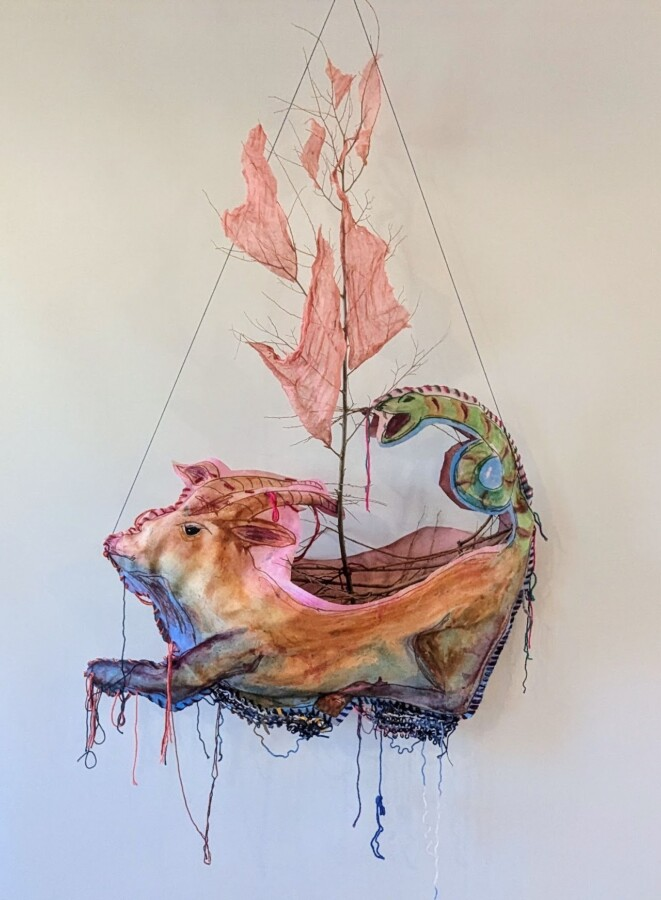

Carol Schrader: Rising Waters, Mythical Ships
Join us for the opening reception of Carol Schrader: Rising Waters, Mythical Ships on June 12, 2026 at 5-9pm. Carol Schrader’s Rising Waters, Mythical Ships invites viewers into a lush, layered world where mythology, memory, and contemporary life drift together on vibrant seas. Whimsical ships sail through colorful waves alongside chimera, creating a dreamlike menagerie